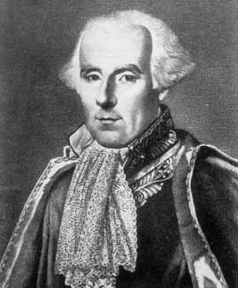

Pierre-Simon Laplace
Pierre-Simon LaplacePierre-Simon Laplace was a prominent French mathematician, physicist, and astronomer of the 19th century, who made crucial contributions in the arena of planetary motion by applying Sir Isaac Newton's theory of gravitation to the entire solar system. His work regarding the theory of probability and statistics is considered pioneering and has influenced a whole new generation of mathematicians.
Pierre-Simon Laplace entered Caen University when he was 16 and he soon developed a strong interest in mathematics. When he was only 19, he moved to Paris, to work as a professor of mathematics at the Ecole Militaire with the fellow mathematician Jean-le-Rond D'Alembert, all this without finishing his degree. Five years later, Laplace had already written 13 scientific papers regarding integral calculus, mechanics and physical astronomy, which gained him fame and acclaim all over France.
Laplace's fame increased during 1770's decade. But it was not until the period of 1780's in which Laplace produced the depth of results which have made him one of the most important and influential scientists that the world has seen. It does appear however that Laplace was not modest about his abilities and achievements, and he probably failed to recognise the effect of his attitude on his colleagues.
Laplace was made a member of the Paris Academic des Sciences in 1773, where he assumed a senior position in 1785. He was given the duty of standardizing all European weights and measures.
Laplace died in Paris, France, on March 5, 1827. He was 77 years old. It is impossible to overstate the influence Laplace had on the progress of the mathematical theory of mechanics. Various fundamental concepts, for instance the Laplace operator in potential theory and the Laplace transform in the study of differential equations, are named after him.